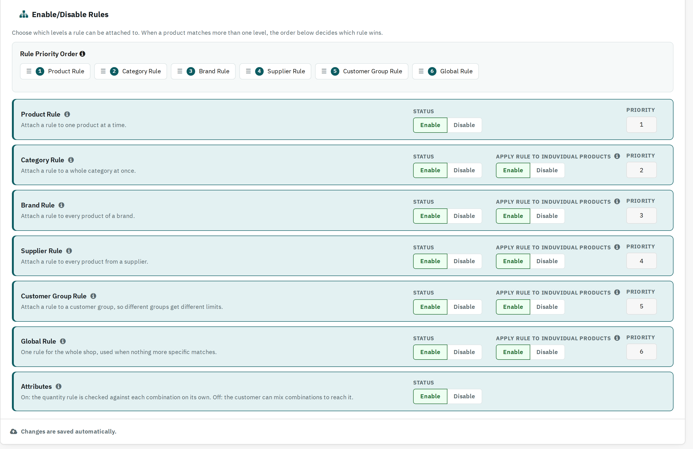

Choose which levels a rule can be attached to. When a product matches more than one level at once (for example it belongs to a Category rule and a Brand rule), the Rule Priority Order below decides which one wins:
Product > Category > Brand > Supplier > Customer Group > Global

| Level | What it does |
|---|---|
| Product Rule | Attach a rule to one product at a time. |
| Category Rule | Attach a rule to a whole category at once. |
| Brand Rule | Attach a rule to every product of a brand. |
| Supplier Rule | Attach a rule to every product from a supplier. |
| Customer Group Rule | Attach a rule to a customer group, so different groups get different limits. |
| Global Rule | One rule for the whole shop, used when nothing more specific matches. |
Apply Rule to Individual Products (shown for Category / Brand / Supplier / Customer Group / Global): Enable checks the limit separately for each product under that rule; Disable pools every product under the rule into one shared total.